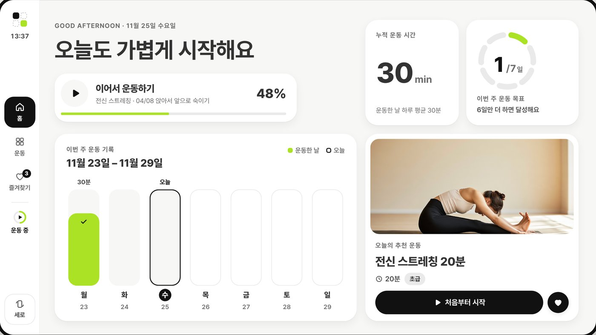
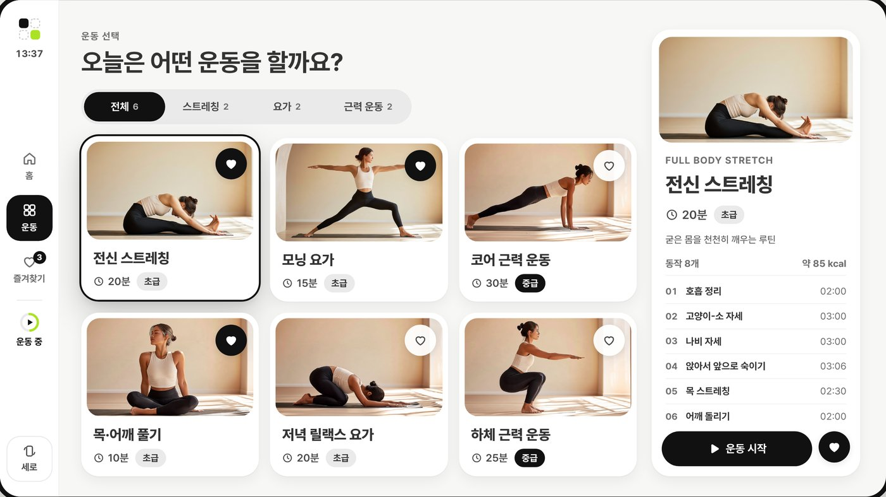
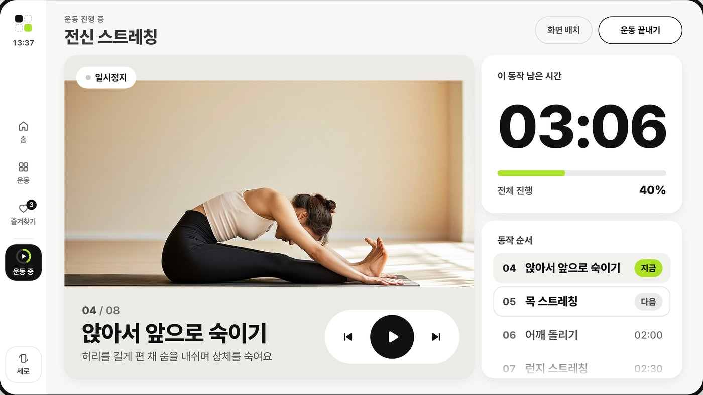
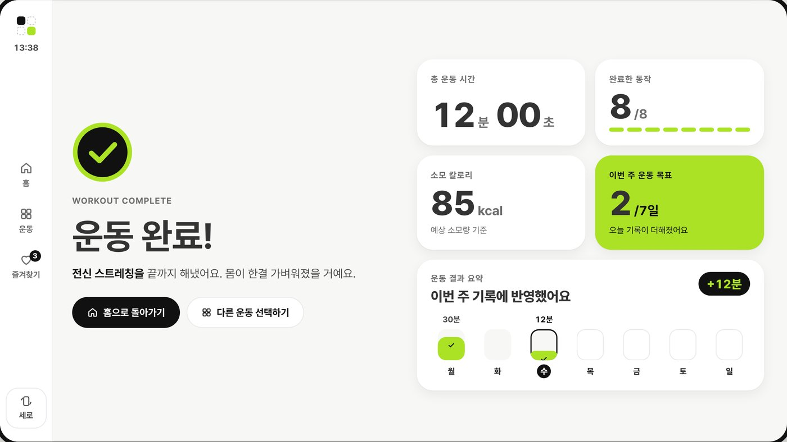
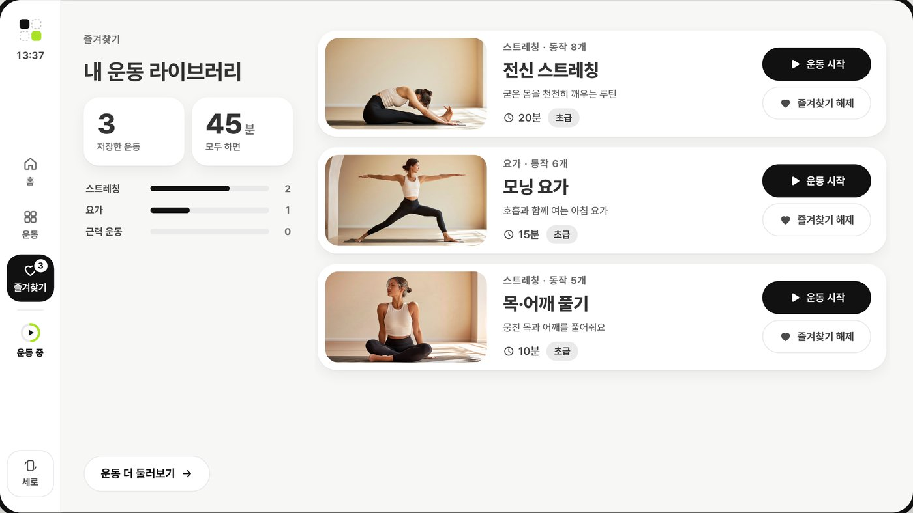
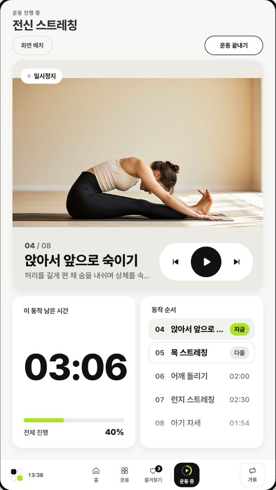
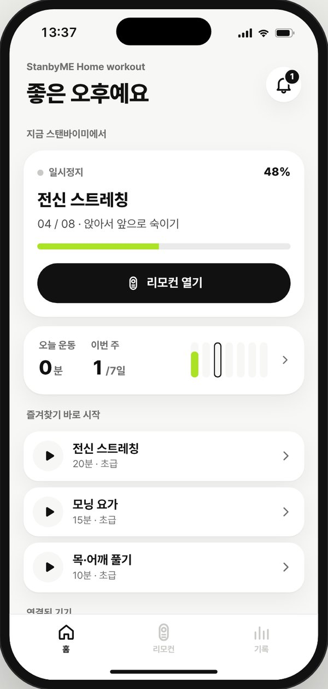
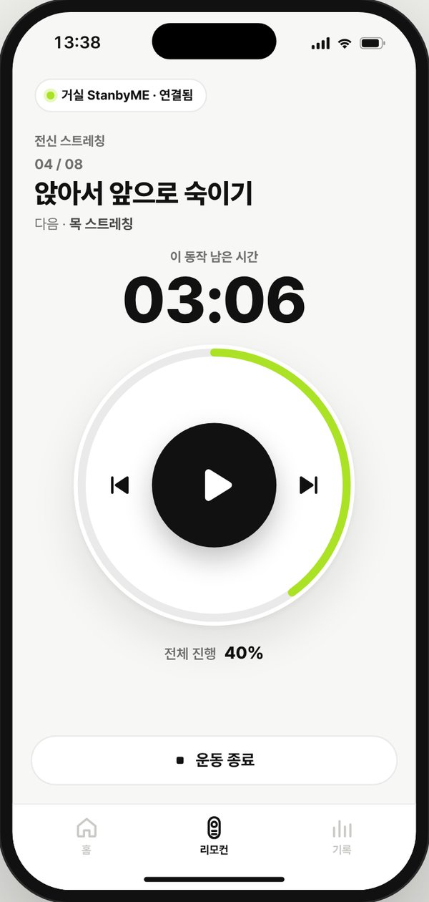
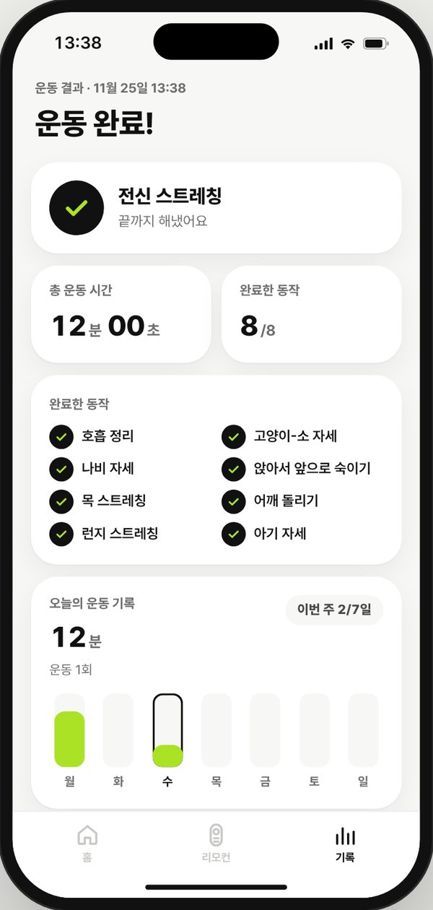

Opening filmStanbyME에 실제 GUI를 띄워두고, 그 화면을 보며 운동하는 장면
16:9 · 15–20초 · 가로 → 세로 전환 컷 포함
LG StanbyME는 자유롭게 이동하고 가로·세로로 회전할 수 있는 스크린입니다. 이러한 특성을 활용하여, 집 안 어디에서든 운동 종류와 자세에 맞게 화면을 조절하며 홈트레이닝을 이어갈 수 있는 GUI를 설계하였습니다.
홈트레이닝 환경
사용자 특성
운동에 따라 화면을 바라보는 높이와 방향이 다르다.
동작 영상을 계속 확인하며 자세를 맞춘다.
화면과 거리가 있고, 운동 중엔 손이 자유롭지 않다.
TV 위치가 고정되어 운동 공간이 제한됩니다.
운동 환경에 맞춰 화면을 조절합니다.
순서·시간을 내 상황에 맞게 바꾸기 어렵습니다.
블록처럼 골라 쌓고, 위치와 크기를 자유롭게 조절합니다.
운동을 멈추고 화면에 다가가야 합니다.
큰 카드 UI와 모바일에서 운동을 간편하게 제어합니다.
집에서 운동 영상을 보며 스트레칭과 근력 운동을 진행하는 사용자
운동 자세에 맞는 화면 위치와 필요한 운동 정보를 편리하게 확인하고 싶습니다.
운동 중 화면을 직접 조작하기 어렵고, 필요한 정보가 작게 보일 때가 있습니다.
바퀴 달린 스탠드
가로 ↔ 세로 전환
27형 터치스크린
내장 배터리
| 기준 | TV | 스마트폰 | 태블릿 | StanbyME |
|---|---|---|---|---|
| 화면 크기 | 큼 | 작음 | 보통 | 큼 |
| 공간 이동 | 어려움 | 쉬움 | 쉬움 | 쉬움 |
| 화면 회전 | 불가 | 가능 | 가능 | 가능 |
| 직접 터치 | 리모컨 | 가능 | 가능 | 가능 |
| 원거리 시청 | 적합 | 부적합 | 제한적 | 적합 |
운동 중 중요하게 확인하는 정보와 우선순위는 사용자마다 다를 수 있습니다.
조립 블록의 결합과 재배치 특성을 GUI에 적용했습니다.
운동 정보 카드의 위치와 크기를 자유롭게 조절할 수 있습니다.
블록의 특징과 GUI 적용
카드를 길게 눌러 들어 올리고, 원하는 위치로 끌어 놓아 배치를 바꿀 수 있습니다.
카드의 크기를 조절해 필요한 정보를 더욱 크게 확인할 수 있습니다.
카드를 이동하거나 크기를 변경하면 주변 카드가 빈칸 없이 자동으로 재배치됩니다.





※ 즐겨찾기는 홈과 운동 선택 화면에서 진입합니다.
같은 블록, 다른 배치영상 옆에 정보 카드 배치
| 항목 | 가로 | 세로 |
|---|---|---|
| 레이아웃 | 가로 중심의 카드 배치 | 세로 중심의 카드 배치 |
| 운동 영상 | 넓은 영상 영역 | 상단 중심의 영상 영역 |
| 운동 정보 | 영상 옆 정보 카드 배치 | 영상 아래 정보 카드 배치 |
| 화면 특징 | 여러 정보를 한눈에 확인 | 운동 영상과 주요 정보에 집중 |

StanbyME는 보고 따라 하는 화면, 모바일은 조작하고 기록하는 화면입니다.



캡처나 영상 대신, 제작한 StanbyME GUI와 모바일 웹 화면을 직접 구동하며 시연합니다.
제작한 GUI를 실제로 조작하며 화면 전환과 인터랙션을 그대로 보여줍니다.
StanbyME GUI와 모바일 웹 화면을 함께 띄워, 모바일 조작이 StanbyME에 반영되는 모습을 보여줍니다.
홈에서 운동 완료까지 실제 사용 순서대로 이어서 구동합니다.
시연 순서 버튼을 누르면 그 장면으로 이동합니다. 화면 안의 버튼도 실제로 동작합니다.